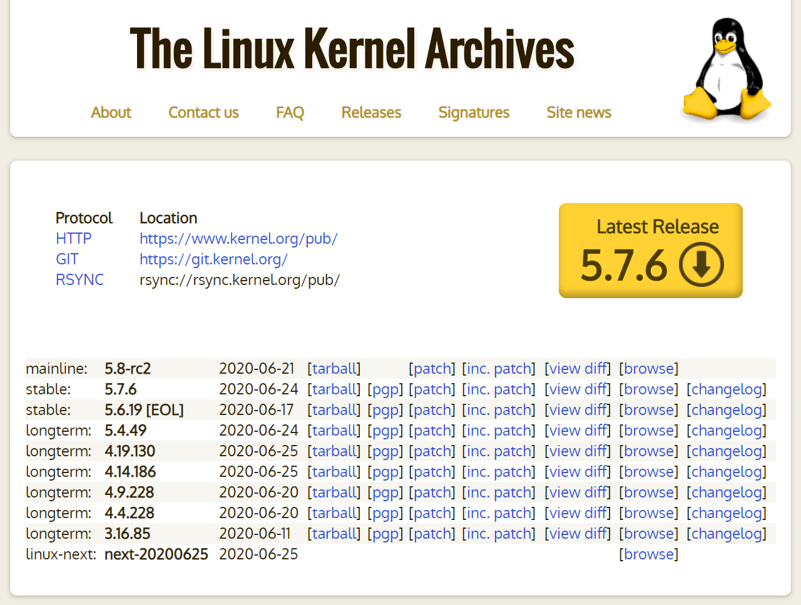
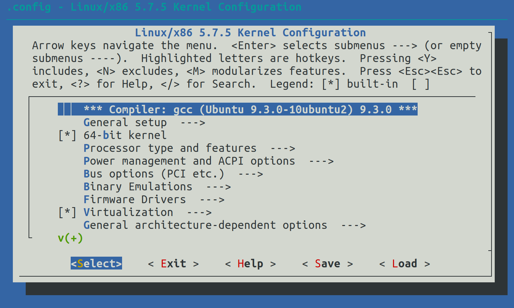
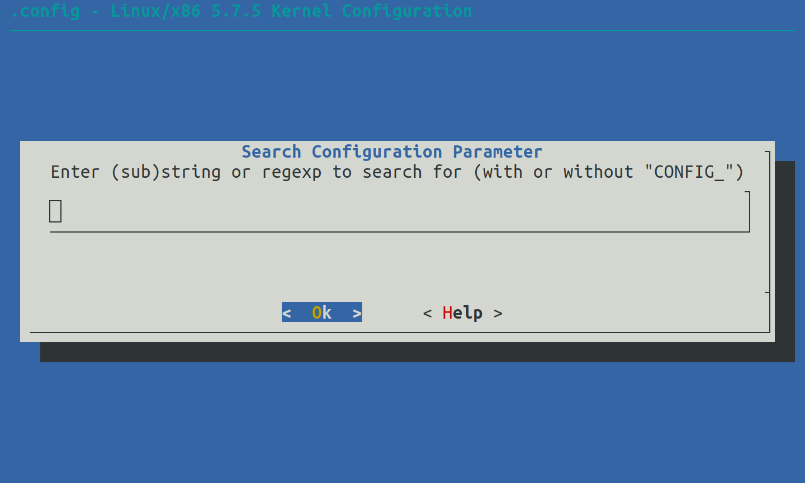
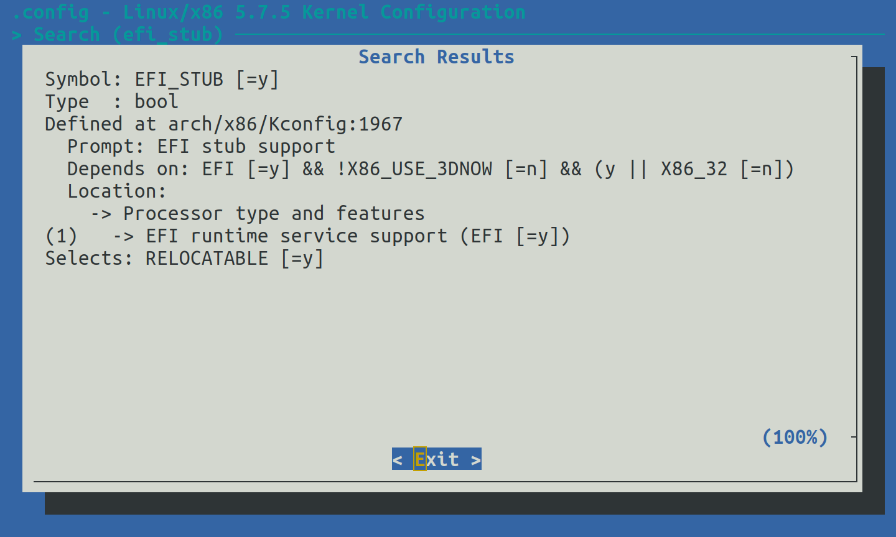

启动Linux: 编译并启动内核
自Linux内核3.3版本起，可以在编译时的设置(menuconfig)选择将其编译成UEFI应用程序，这个功能叫做EFI Stub。通过这个功能，我们可以用之前介绍过的运行UEFI应用程序的办法来启动Linux内核镜像(bzImage格式)。
本节示例代码的目录为boot-kernel (日文版为037_start_bzImage)。
环境搭建
这里我们介绍在使用apt包管理器的发行版(Debian、Ubuntu等)下的环境搭建。
通过apt build-dep <软件包名>命令，可以一键安装编译某个特定软件包的依赖包。
内核镜像的包名是linux-image-<版本号>-<类型>。当前使用的内核版本号和类型可以通过uname -r命令来查看。因此，我们可以用下面这条命令来安装编译Linux内核要用到的环境。
$ sudo apt-get build-dep linux-image-$(uname -r)
此外，menuconfig的依赖libncurses5-dev在运行apt-get build-dep时不会被安装，我们需要手动安装它。
$ sudo apt install libncurses5-dev
获取Linux内核源代码
源代码可以通过apt-get source <软件包名>来获取，但这里，我们使用kernel.org上的最新的稳定版Linux内核。点击网页上的"Latest Stable Kernel"，就可以下载了。

图4.32: kernel.org
下载完成后，用下面的命令解压它。
$ tar -Jxf linux-<版本号>.tar.xz
译者补充: 从镜像网站下载
由于众所周知的原因，直接从kernel.org下载内核源码的速度可能会令人难以忍受。一个解决办法是从国内的镜像站下载。
清华大学开源软件镜像站: https://mirrors.tuna.tsinghua.edu.cn/kernel/
中国科学技术大学开源软件镜像站: https://mirrors.ustc.edu.cn/kernel.org/linux/kernel/
找到Latest Stable Kernel对应的
.tar.xz文件点击下载即可。
配置编译选项
接下来我们配置内核的编译选项。首先进入到解压后的Linux内核源代码的目录，并载入x86_64架构的默认编译选项。
$ cd linux-<版本号>
$ make x86_64_defconfig
接着，打开menuconfig，并启用EFI Stub(选项名为CONFIG_EFI_STUB)。
$ make menuconfig

图4.33: menuconfig界面
找到并进入"Processor type and features"，并勾选"EFI stub support"（按"Y"键）。

图4.34: 勾选"EFI stub support"
编译内核
现在我们开始编译Linux内核。make命令的-j选项指定编译线程数，这里我们用nproc命令获得的逻辑CPU数量作为-j选项(编译线程数)的值来加快编译速度。
$ make -j $(nproc)
编译Linux内核可能需要比较长的时间，坐和放宽。
编译完成后，我们会在arch/x86/boot目录下得到一个名为bzImage的镜像文件。
启动内核镜像
把arch/x86/boot/bzImage复制到之前我们存放test.efi的位置，并改名为bzImage.efi，再把上一节图4.30代码中的test.efi改成bzImage.efi并重新编译1，就可以启动Linux内核了，如图4.35所示。

图4.35: 启动时产生的内核错误
虽然这里我们启动了Linux内核，但这里产生了一个内核错误(Kernel panic)，这是因为我们还没有指定根文件系统。下一节将介绍如何指定这些启动参数。
补充: 使用menuconfig的搜索功能
如果在menuconfig界面中找不到之前说的选项，我们可以尝试使用它的搜索功能。在menuconfig界面中按下/键可以打开搜索界面，如图4.36所示。

图4.36: menuconfig的搜索界面
在搜索框中输入关键词"efi_stub"2，按下Enter键，将会显示这个选项的所在位置和依赖关系，如图4.37所示。这里所有搜索结果的选项名中的CONFIG_均被省略。

图4.37: "efi_stub"的搜索结果
这里的Location是这个选项的位置，Prompt是这个选项的名称。
如果我们在Location中找不到Prompt这个选项，那么我们应该留意这个选项的依赖(Depends on)。例如上图表明启用CONFIG_EFI_STUB这个选项的前提是要启用CONFIG_EFI并禁用CONFIG_X86_USE_3DNOW，这里方括号[]中的是当前该选项的值。当现在设置的选项的值与某个选项依赖要求的不一致时，该选项将不会在menuconfig界面中显示。因此需要先更改依赖选项的值，再来启用这个选项。
译者注：在中文版示例代码中，请将bzImage复制到示例代码目录linux/kernel下，Makefile会自动完成后续操作
搜索功能是大小写无关的